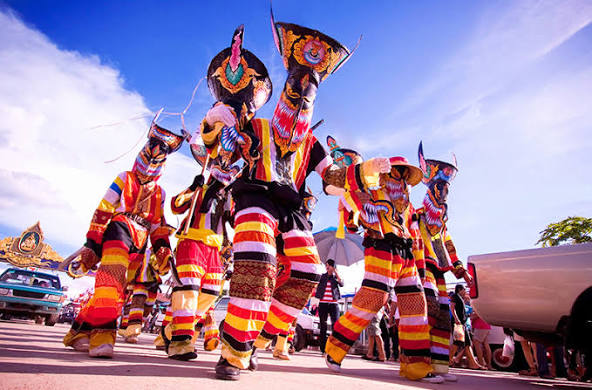

ผีตาโขน
ประเพณีพื้นบ้านอันทรงคุณค่าของจังหวัดเลย

ผีตาโขน เป็นประเพณีที่สะท้อนความเชื่อ วิถีชีวิต
และงานหัตถศิลป์ของชาวอำเภอด่านซ้าย จังหวัดเลย
มีเอกลักษณ์คือหน้ากากสีสันสดใส และขบวนแห่ที่สนุกสนานขบวนผีตาโขน
เป็นการละเล่นพื้นบ้านสีสันสดใสในงานประเพณีบุญหลวงที่ อ.ด่านซ้าย จ.เลย (ราวเดือนมิ.ย.-ก.ค.)
ผู้เล่นสวมหน้ากากผ้าและชุดเศษผ้าสีสันจัดจ้าน พร้อมอาวุธไม้ มีทั้งผีตาโขนใหญ่ (หุ่นไม้ไผ่สาน) และผีตาโขนเล็ก
(คนเล่น) ออกมาร่วมขบวนแห่พระเวสสันดร มีความเชื่อว่าเพื่อขับไล่สิ่งชั่วร้าย ทำให้หายโรคหายภัย สนุกสนาน
และบูชาสิ่งศักดิ์สิทธิ์ท้องถิ่น โดยส่วนใหญ่จะนำหน้ากากไปลอยน้ำทิ้งที่แม่น้ำหมันในวันสุดท้ายของงาน